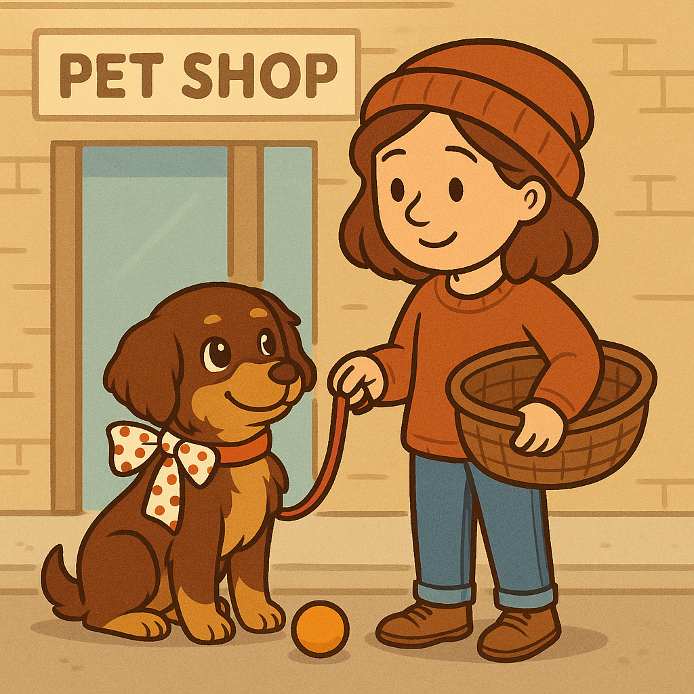

Una nueva aventura juntas

Le puso por nombre "Tanyi".
Listas para empezar una nueva aventura juntas.
Junto a su collar le colocó un lindo lacito de lunares blanco y rojo, y luego fueron juntas a comprar algunas cositas para Tanyi como una cesta para dormir, los envases para comer y una pelota para jugar en el parque.
Listas para empezar una nueva aventura juntas.
Junto a su collar le colocó un lindo lacito de lunares blanco y rojo, y luego fueron juntas a comprar algunas cositas para Tanyi como una cesta para dormir, los envases para comer y una pelota para jugar en el parque.
Escuchar cuento